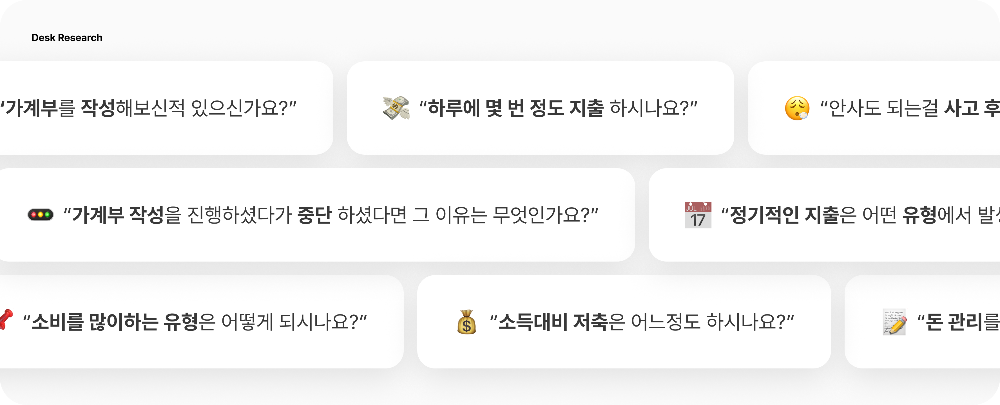
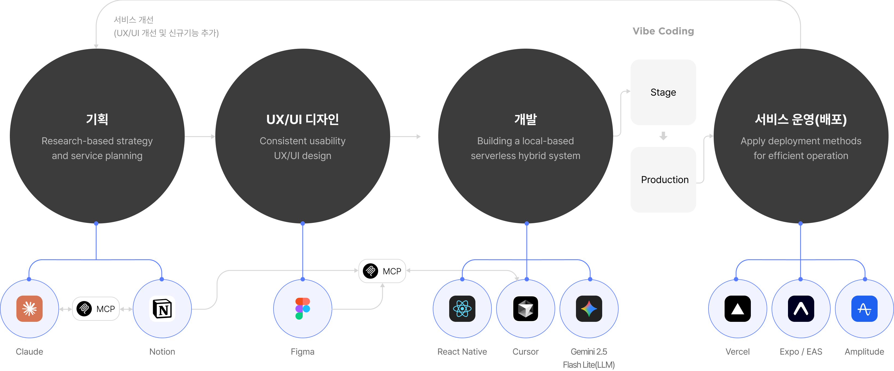
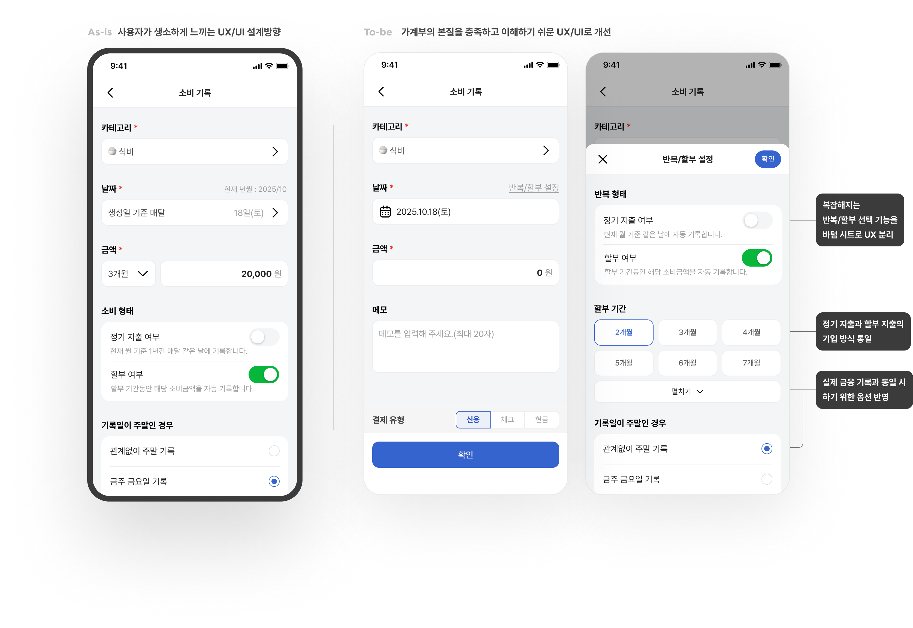
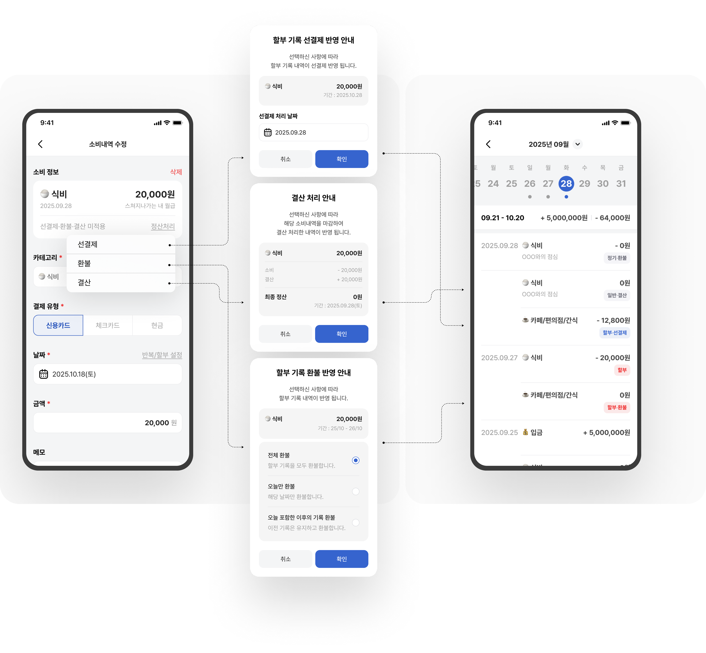
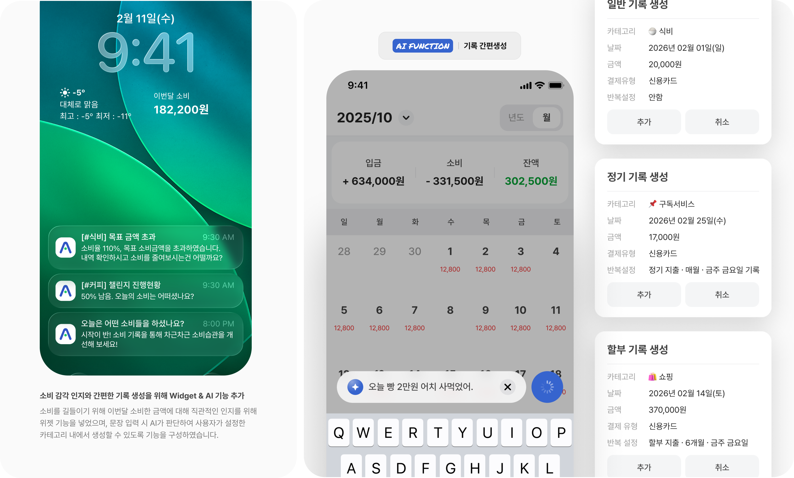
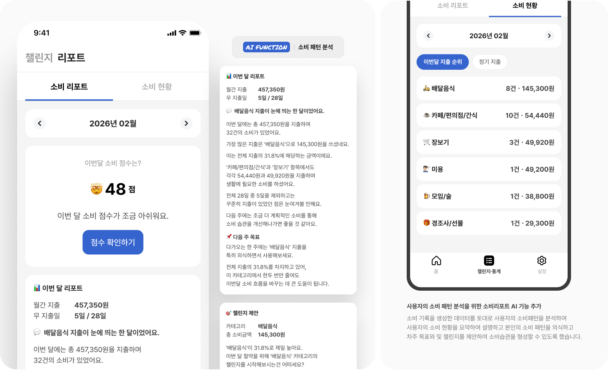
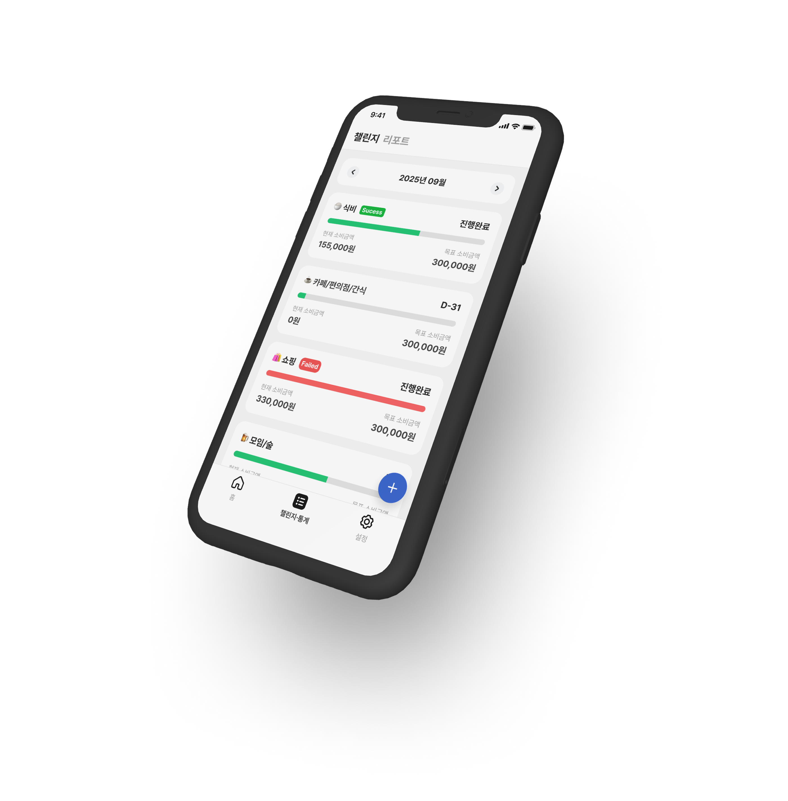

“소비를 많이하는 유형은 어떻게 되시나요?”
- 식비43.9%
- 카페/편의점/간식22.0%
- 배달음식22.0%
- 쇼핑9.8%
- 문화/여가2.4%

A·Wallet은 소소한 금액들을 대수롭게 여기지 않으며 과소비하는 사용자들을 위하여 제작되었습니다.
각자 예산에 따라 금액을 설정하고 과소비하는 분류의 목표를 설정하여 지출에 대한 체감과 실질적인 소비개선에 도전합니다.
소비를 줄일 수 있는 프로세스를 정의하였으며, 목표를 달성하여 사소한 소비습관을 고쳐나갈 수 있습니다.

가계를 가장 활발하게 발생시키는 직장인들을 대상으로 평소에 지출 관리에 대해 어렵게 느꼈거나
본인의 불편함을 떠나 다른 사람들도 동일한 문제들을 겪고 있는지
확인하고 아이디어에 대한 1차적인 검증을 하기 위해 서베이를 진행하였습니다.

Service Design Direction
서비스 설계 방향
데스크리서치의 결과를 기반으로 서비스의 방향과 기능을 선정하였고
소비 현황을 한번에 파악하고 순차적으로 파악할 수 있도록 UX를 설계하였으며
타임라인만이 아니라 실질적인 지출건 수를 노출시켜 스스로의 소비 성향을 파악할 수 있도록 하였습니다.


Feature Improvements
기록 생성 개선
사용성 테스트 시 설계 의도와는 다르게 소비 기록을 생성하는데 어려움을 느끼거나 불편함에 대한
부분을 해결하여 가계부의 본질을 충족하고 직관적인 생성 경험이 될 수 있도록 개선하였습니다.

Detailed Functional Design
정산·할부 처리
사용자의 액션을 줄이고 편의를 더할 수 있도록
선결제 부분과 환불에 대한 경험을 반영할 수 있도록 기능을 구현하였습니다.

Add AI Easy Input Capability
AI 간편 입력
필수 항목인 날짜, 카테고리, 금액을 한문장으로 입력하면 일반 기록, 정기/할부 기록 들을
생성할 수 있도록 편의성을 높인 기능을 추가하였습니다.

AI consumption report functionality
소비 리포트
생성된 데이터를 토대로 AI가 소비 패턴을 파악하여 월 단위 기준으로
과소비 영역에 대한 피드백을 주어 실질적인 관리가 될 수 있도록 챌린지를 제안합니다.

기능 구현 목적
소비패턴을 파악한 다음 소비를 개선하기 위해 챌린지를 생성하여
실질적인 소비의 현황을 인지하고 소비할 수 있도록 기능을 구현하였습니다.

Design System
디자인 시스템
파운데이션 영역을 Variable로 선언하여 테마와 용도로 스타일을 분리하여
컴포넌트를 구성하는 방향으로 구축하였습니다.